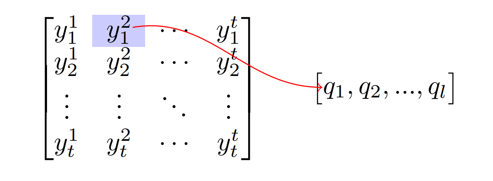

Introduction
"Label Distribution Learning" (LDL), introduced by Geng (2013), is a learning technique that presumes that the label is a distribution over a label space. For example, suppose we have a dataset of facial images where the labels describe a single emotion that the subject of the photo is displaying. In an LDL setting, the annotation for each image should describe a distribution over the given emotions since humans usually never experience a single emotion at any given time. However, it's impossible to fully enumerate the full spectrum of emotions behind a facial expression, even by the person experiencing it. Researchers tend to simplify this distribution into a single emotion given an image to form datasets. The fact that the labels in many datasets are simplifications of a complex distribution (i.e. a sampling of a true distribution) is part of what necessitates the study of LDL. Often LDL techniques can operate where the underlying distribution of the labels is partially or completely unknown beforehand.
Geng (2013) describes LDL as training models on the underlying distribution of the labels rather than just the given labels. Namely, given $S= \{(x_{i},D_{i})|i=1,2,..,n\}$ where $D_{i}=(d^{(i)}_{1}, d^{(i)}_{2},..,d^{(i)}_{c})$, $d^{(i)}_{j}\in [0, 1]$, and $\sum_{j}d^{(i)}_{j}=1$. Then, LDL tries to learn a conditional probability mass function $p(y|x)$ from $S$, for $x$ in a vector input space $X$ and $y\in \{y_1, y_2, ..., y_c\}$ a set of $c$ labels. Assume that $p(x|y)$ (as is often the case in the supervised learning setting) is a parametric model: $p(y|x,\theta)$. Thus the goal of LDL is finding the $\theta$ such that $D_{i}\approx p(y|x,\theta)$. Where the loss function to optimize $\theta$ is the Kullback-Leibler divergence. What I described is a well-known setup for the single-label-learning setting as well as the multi-label-learning setting thus, the maximum likelihood estimate for $\theta$ is well-studied: $$\theta^{\text{MLE}}=\text{argmax}_{\theta}\sum_{i}\ln p(y(x_i)|x_{i},\theta)$$
According to Geng (2013) there are three strategies to design algorithms for LDL.
- Problem Transformation
- Algorithm Adaptation
- Specialized Algorithms
Problem Transformation
These strategies manipulate the LDL setting (mentioned above) into an SLL setting. Geng (2013) gives the example of converting each pair $(x_{i},D_{i})$ into $c$ new weighted samples: $(1,x_{i},d_{i}^{(1)}),(2,x_{i},d_{i}^{(2)}),..,(c, x_{i},d_{i}^{(c)})$ and combining the results into a new expanded dataset. Then the model trained conditioned on both the label index $j$ and $x_{i}$ in order to predict $d_{i}^{(j)}$. However, this is impossible to do if the true label distributions $D_{i}$ are unknown.
Algorithm Adaptation
These strategies adapt a prexisting learning strategy for the LDL setting. I present a few modern examples.
Label Correlation Grid
Guo et. al., (2022) learn pairwise correlations between valrious labels. They incorperate the ditribution of the labels by computing a "label correlation grid" (LCG) for each batch of labels and network output. Namely, given a label vector, we compute the a covariance matrix: $y_{m}\in\mathbb{R}^{c\times c}$. We then sample the 2d gaussian $\mathcal{N}(y_{m},.5\mathbf{I_{c\times c\times c}})$, $c$ times and concatenate the samples along a new axis, resulting in $y_{\text{grid}}$. We then compute $p_{\text{grid}}$ following the same steps taken to compute $y_{\text{grid}}$. The final (LDL) loss is absolute the difference between batches of correlation grids. That is, $$\mathbf{L}:=||y_{\text{grid}}-p_{\text{grid}}||_{1}.$$
Specialized Algorithms
These strategies directly optimise the Kullback-Leibler divergence between the the label distribution and the model output. These strategies are tipically used when the label distribution is partially or fully known.
Ordinal Data
Si et. al. (2022), provide a specialized technique to apply LDL to Speaker Age Estimation where the labels integers and have a natural ordering. They convert the ordinal integer labels (i.e. speaker age)into the LDL setting by creating a probability vector across ages where the center of mass is the label age. Namely, for a given age $k\in [1,K]$ where $K$ is the highest age, we create a vector $y^k$ of all zeros but is 1 for the $k^{th}$ position. Then, $$k=\sum^{K}_{i=1}i\cdot y_{i}^{k}.$$ Then the probability mass in $y^k$ is redistributed using the p.d.f. of a gaussian distribution with mean $k$: $$y_{i}^{k}=C^{-1}\exp{\{-(k-i)^{2}/2\sigma^{2}\}}$$ where $\sigma$ is a set standard deviation and $C$ is a normalising constant such that $\sum_{i=1}^{K}y_{i}^{k}=1$. The model is then trained to match the given label distribution $y^k$.
EfficientFace
This work introduced by Zhao et. al. (2021), contructs a loss that disstills a learnind distribution over the labels. Where the distribution is implicitly learned from simply training on a wide range of facial regegnition datasets. The authors seem to adopt a well known sudent-teacher setup, where a teacher model is pre-trained on a larger set of data whos preditions on a new dataset is used a labels to train a student. That is, given the output probabilities of a teacher or "label distribution generator (LDG)" denoted $\mathbf{p^{t}}=(p_{0}^{t}, p_{1}^{t},..., p_{c-1}^{t})^T$ where $c$ is the number of possilbe labels (emotions). Then the (LDL) loss is given by, $$\mathbf{L}=(p^{t})^T\log[p^{s}]$$ where $p^{s}$ is the output probailities of the student model. The loss coupled with a unique model architecutre is called EfficientFace that performs very well, if not the best on facial expression recognition (FER).
When to use LDL Strategies
When there is some uncertainty and noise in the labeling. Consider the difficulty in labeling the emotion that a subject is experiencing in a photo. Emotions can overlap, be faked, and often are portrayed sarcastically. Hence, annotating images for human emotion is a uniquely challenging task. LDL strategies can learn from the underlying distribution of emotions and Zhao et. al. (2021) provide empirical evidence for LDL superior performance. Guo et. al. (2022) show that their LDL strategy is robust to a high degree of random noise injected into the labels.
Conclusion
Label Distribution Learning (LDL) strategies are machine learning techniques that operate on the assumption of a label distribution that may are or may-not be immediately accessible. Usually, LDL focusses distribution is defined over a fixed set of predefined classes identical to the well-known single-label-learning and the multi-label-learning settings. Here we established the three high level LDL strategies and detailed a few modern works in LDL in the process. Collectively, these approaches are very effective when there is some level of uncertainty in the label space or when the label distribution is explicitly known.